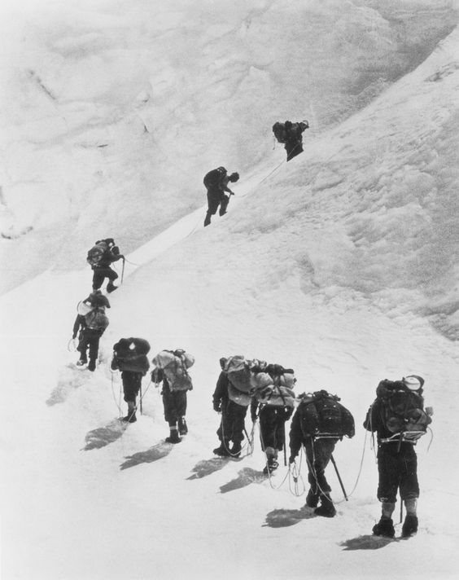

Mountaineering is not merely a sport or a recreational activity; it's an art form, an expression of human resilience, and a communion with the raw forces of nature. At its essence, mountaineering involves ascending mountains, often challenging ones, using a combination of physical strength, mental fortitude, and technical skill. It's a pursuit that pushes individuals to their limits, both physically and mentally, demanding unwavering determination, adaptability, and a deep respect for the environment.

The allure of mountaineering lies in its inherent risks and the sense of adventure it offers. Scaling steep slopes, navigating treacherous terrain, and enduring extreme weather conditions are just a few of the obstacles that mountaineers face. Yet, it's precisely these challenges that draw people to the mountains, seeking not only the thrill of the climb but also the opportunity for self-discovery and personal growth.
Mountaineering is as much about the journey as it is about the destination. It's about the camaraderie forged between climbers as they tackle obstacles together, relying on each other for support and encouragement. It's about the profound connection with nature that comes from spending days or even weeks in the wilderness, surrounded by breathtaking vistas and humbled by the sheer power of the mountains.
But perhaps most importantly, mountaineering is a metaphor for life itself—a constant uphill battle filled with obstacles and setbacks, yet also punctuated by moments of triumph and unparalleled beauty. It teaches valuable lessons about perseverance, resilience, and the importance of pushing beyond one's comfort zone. Ultimately, mountaineering is not just about reaching the summit; it's about the journey of self-discovery and the indomitable human spirit that drives us ever upwards, towards new heights and horizons.